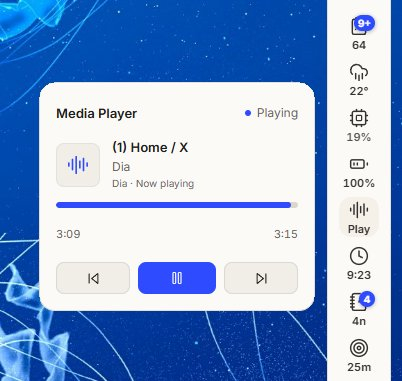
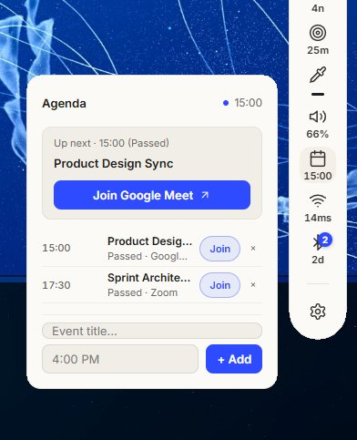
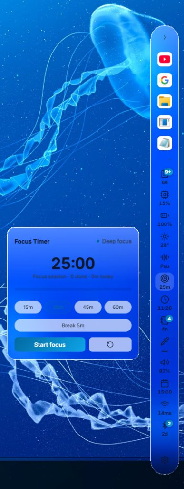
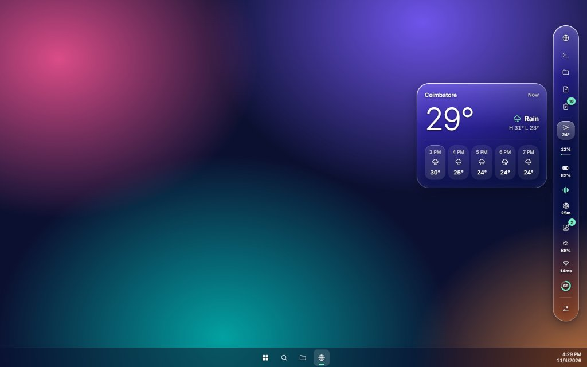
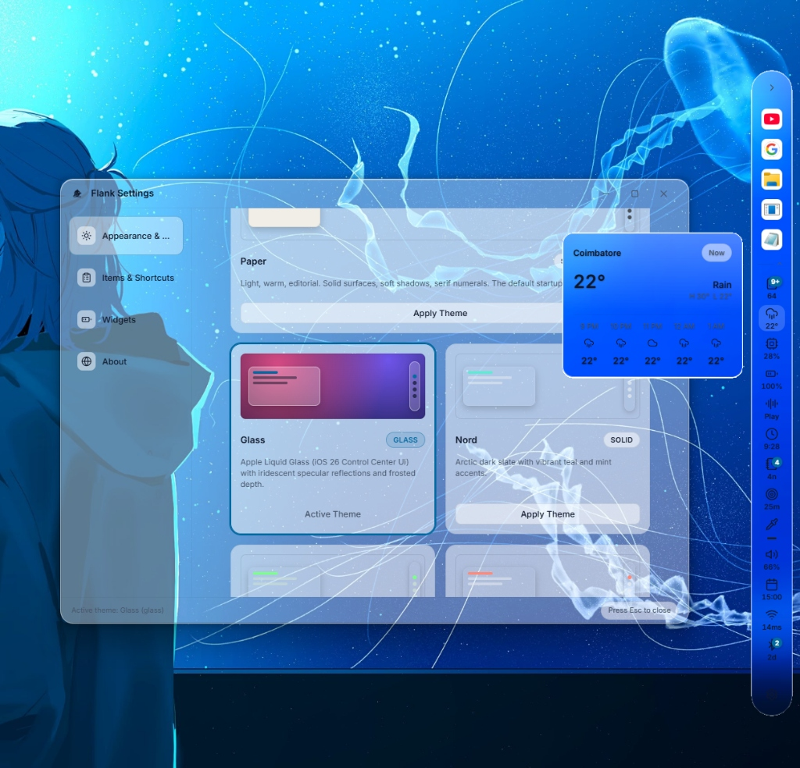

A second dock for everything you keep checking.
Apps, shortcuts, and live glanceable widgets for Windows 11. Weather, audio mixer, system diagnostics, clipboard history, and your background AI coding sessions — always one glance away.
Copied earlier. Ready when you need it.
Search, filter, and recall text, links, and code snippets in an instant with a global hotkey. Stored locally in SQLite, protected by automatic password filtering.
Password Manager Privacy Filter
Automatically detects and drops sensitive credentials copied from 1Password, Bitwarden, KeePass, and browser password fields.
Persistent Local SQLite
Everything stays securely on your machine. Your pinned items, snippets, and history survive Windows reboots with zero cloud uploads.
Instant Keyboard Access
Press Ctrl+Alt+V from any game, code editor, or browser window to summon clipboard history without stealing focus.
Stats in the dock and in a dashboard.
Glanceable hardware telemetry at a glance, plus a comprehensive dashboard with per-core graphs, NVMe wear, and real-time process manager.
Per-Core CPU & GPU Utilization
Hardware monitoring queried via lightweight Windows performance counters with smooth sparkline rendering and configurable refresh intervals.
Top 30 Processes View
Inspect memory hogs and runaway background threads at a glance. Sort processes instantly by CPU percentage or RAM consumption.
Network Ping & Throughput
Real-time gateway ping latency in milliseconds plus upload and download speed telemetry so you always know when your connection drops.

Every widget opens a card.
14 purpose-built widgets that provide glanceable numbers on the dock and expand into rich, interactive controls on hover.
Authentic Windows 11 Widgets in Action



Make it yours. 7 Crafted Themes.
From warm editorial paper to Apple-inspired iridescent liquid glass, Flank matches your desktop aesthetic perfectly.




Private by design. Native performance.
Engineered exclusively for Windows 11 with zero compromise on system performance or user privacy.
Frequently asked questions.
Ctrl+Alt+V for Clipboard, Alt+1 for Terminal, Alt+S for Diagnostics). You can customize or record them in Settings > Items & Shortcuts.